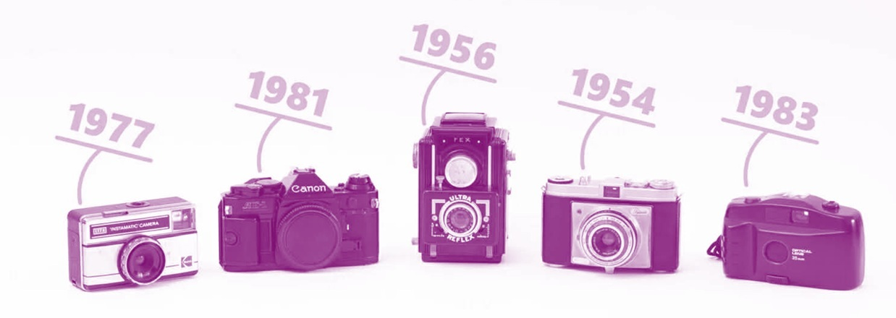

La photographie a connu une évolution importante au fil des années, passant des appareils argentiques aux technologies numériques modernes.
En 1954, les appareils photo étaient encore entièrement mécaniques et utilisaient des films pour capturer les images.
En 1956, de nouveaux modèles plus performants apparaissent, améliorant la qualité des images et la facilité d’utilisation.
En 1977, les appareils deviennent plus accessibles au grand public, avec des formats plus compacts et simples à utiliser.
En 1981, les premières innovations électroniques apparaissent, marquant le début de la transition vers la photographie numérique.
En 1983, les appareils continuent d’évoluer avec des technologies plus avancées, ouvrant la voie aux appareils numériques modernes que nous utilisons aujourd’hui.
Aujourd’hui, la photographie numérique permet de capturer, stocker, retoucher et partager des images instantanément grâce aux capteurs numériques et aux logiciels de traitement.